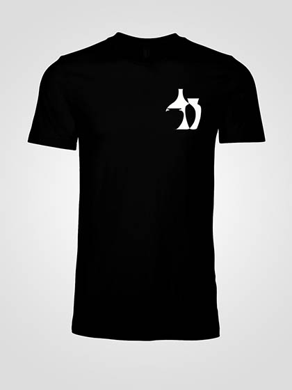
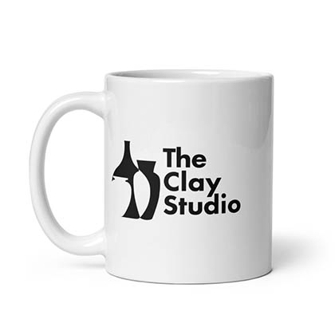
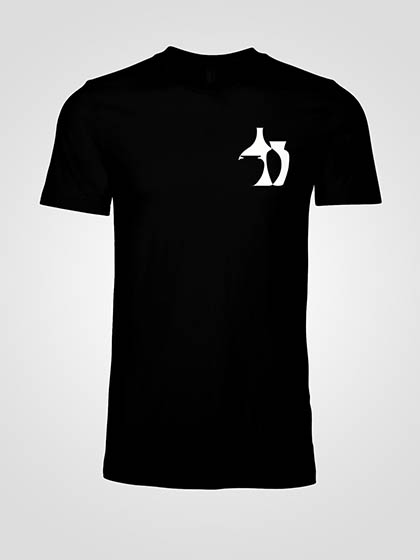
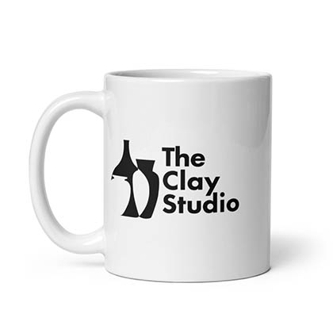

2023
A hypothetical logo design project for The Clay Studio, a non-profit art studio in Philadelphia. The project's goal was to create three logos to embody the character of the organization.

 


